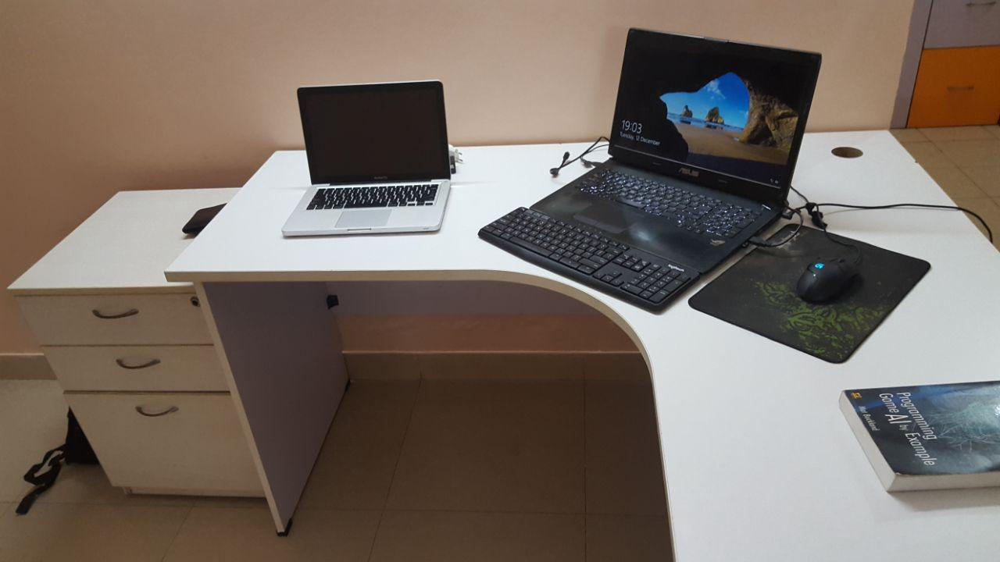
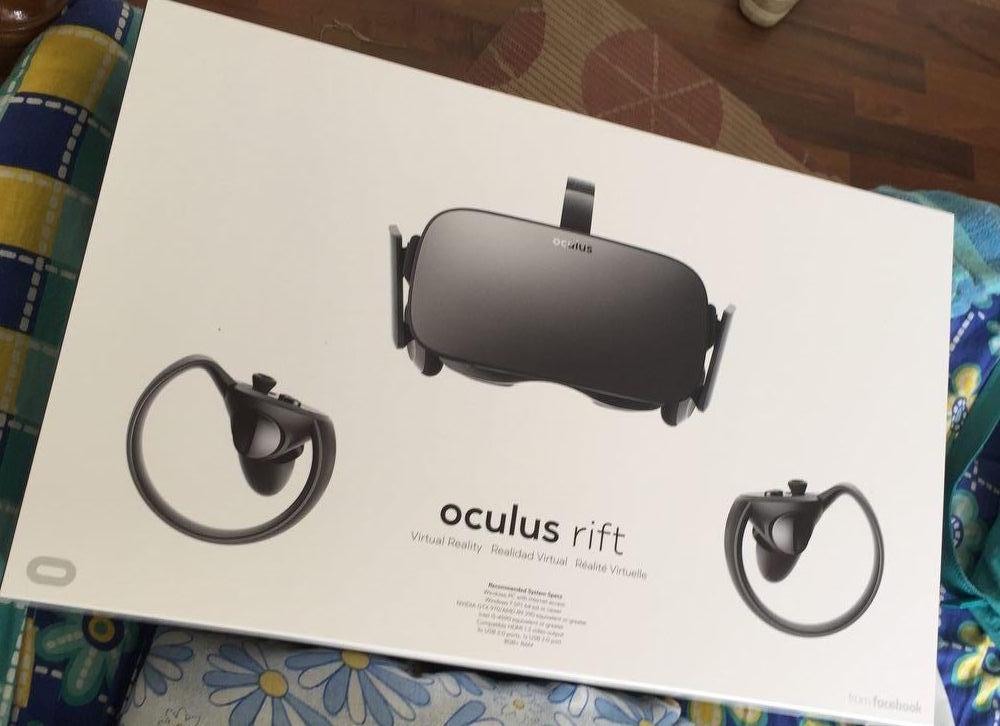

Just moved to Bangalore this month. I’ve only been here a few times over the last couple of years when I didn’t like it *so* much, but after moving here I find it a lot better. The traffic Is truly as bad as I have heard and in the last two weeks I have been in four (very) minor road accidents. The ‘U’ in Bengaluru probably stands for U-turns. And ‘B’ is definitely beer.
Traffic should not really bother me as most days of the week I am going to stay at home all day and work from a small home office that I have set up. Yes I am now almost, as a couple of my friends call me, a "digital nomad".

Setting up a small office at home. Missing right now : The Rift and a new PC. Also that book is amazing.
Work wise, the last two months have been great. I have been making a lot of open source tools that I will polish and release properly with documentation. Presently doing a lot of contract work. At least half of my work is on Virtual Reality right now and I recently got an Oculus Rift. My laptop is quite old (ASUS ROG G750JX) so a PC is the need of the hour.

A bit late to the party, but hopefully last mover advantage?
At PLAKC, we are likely going to find a replacement for me to work on the day to day development, maintenance and support work of the SDK. There are some great feature additions coming up but I really want to automate our build process that involves platform/architecture dependent compiling, obfuscation and packaging which if done manually is very error prone, slow and menial.
Independent development being a really new way to work to me, I need to come up with some new time management principles. I have been billing hourly for a while and that has completely changed the way I think about time and money as they are almost interchangeable things now. “Time is money” is now literally true and that mindset prevents me from wasting time. I’ll blog about this soon.
So, talking about my plans for the next on year or so, there are a bunch of things I would like to do:
- Continue making open source projects. With time I expect to make bigger ones.
- Work on VR games and art experiences. I have so many ideas written down right now.
- Make some commercial VR products. I’m quite excited about them, what they are will be revealed soon.
- Learn some low level game programming. Maybe do a few of those “Doom/Minecraft in a week” with OpenGL and C++ when I get some time off.
- Participate in some game jams.
- Learn some shader programming and also the processing.org library.
- Continue with contract and consulting work that I have already been busy with.
So that’s it. Bangalore has actually been great so far and there are so many things I am looking forward to ever since I moved here.